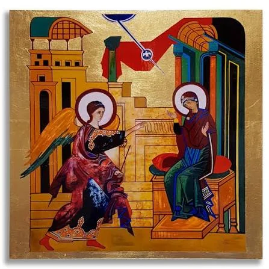
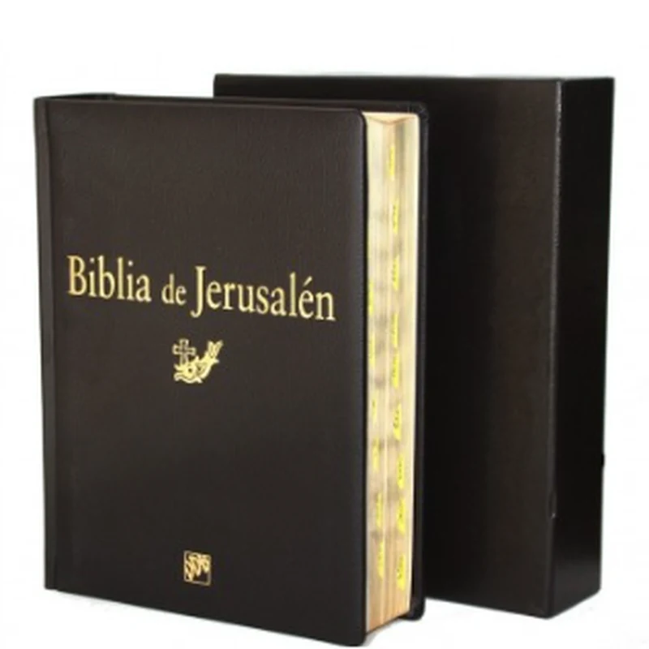
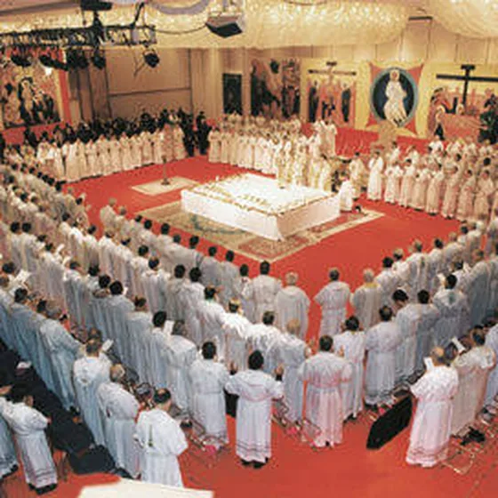
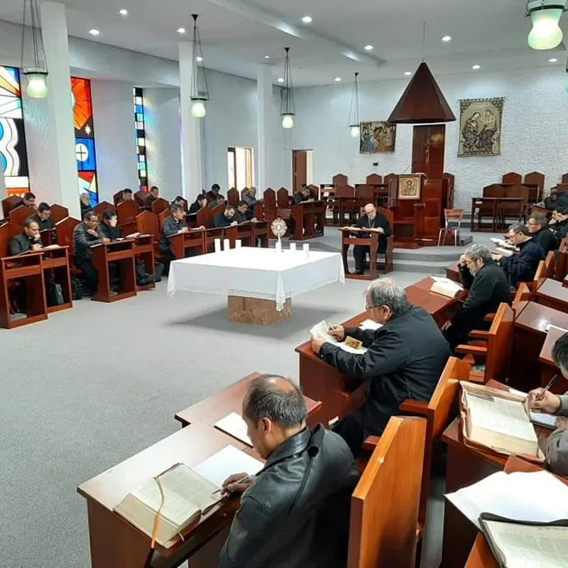

"Un itinerario para redescubrir el inmenso tesoro de tu Bautismo."
Iniciamos en octubreEl Camino Neocatecumenal es un itinerario de formación católica al servicio del obispo y del párroco, pensado para los que ya están bautizados y desean redescubrir y vivir en plenitud lo que recibieron el día de su Bautismo.
No es una asociación ni un grupo cerrado: es un camino de iniciación cristiana vivido en pequeñas comunidades, donde, poco a poco y de la mano de la Palabra de Dios, la Liturgia y la fraternidad, cada persona va madurando en la fe hasta llegar a una fe adulta y a un amor capaz de servir y perdonar.
Está abierto a todos: a quienes se sienten lejos de la Iglesia, a quienes buscan profundizar, a familias, jóvenes y mayores. Nadie queda fuera.

"El que cree en mí, aunque haya muerto, vivirá." — Juan 11, 25
El Camino se apoya, como un taburete de tres patas, en tres realidades inseparables que sostienen toda la vida cristiana:

Cada semana celebramos la Palabra: escuchamos las Escrituras, las resonamos en la propia vida y descubrimos que Dios sigue hablándonos hoy, en lo concreto de nuestra historia.

El centro es la Eucaristía, celebrada en pequeña comunidad el sábado por la noche, como hacían los primeros cristianos: la Pascua del Señor vivida y celebrada con alegría.

Caminamos junto a otros hermanos en una comunidad concreta donde aprendemos a amar, a perdonar y a llevar las cargas los unos de los otros, como signo del amor de Cristo.
Inspirado en el catecumenado de la Iglesia antigua, el Camino es un proceso gradual. No hay prisa: cada etapa tiene su tiempo y prepara para la siguiente, hasta llegar a renovar las promesas del Bautismo.
Un ciclo de catequesis, abierto a todos, en el que se anuncia el Kerigma: el amor de Dios y la Buena Noticia de la salvación en Jesucristo.
Tras una primera convivencia, los que han hecho las catequesis forman una comunidad y comienzan a caminar juntos en la fe.
A lo largo de varias etapas y "pasos", la comunidad se ejercita en la escucha de la Palabra, la oración, la liturgia y el servicio, descubriendo poco a poco las riquezas de la fe.
La meta del itinerario: una fe adulta y madura que renueva las promesas bautismales y se hace testimonio vivo en la familia, el trabajo y la sociedad.
Todo comienza con las catequesis iniciales, abiertas a cualquier persona, sin requisitos previos. Solo hace falta el deseo de escuchar. ¡Iniciamos en octubre!
Inicio: Octubre de 2026
Lugar: Parroquia de Santa Lucía
* Las fechas y el horario exacto se anunciarán en las misas y en nuestras redes. ¡Estate atento a la sección de Noticias!
Acércate sin compromiso a las catequesis iniciales. Hay un lugar para ti en este Camino.
Pedir información →